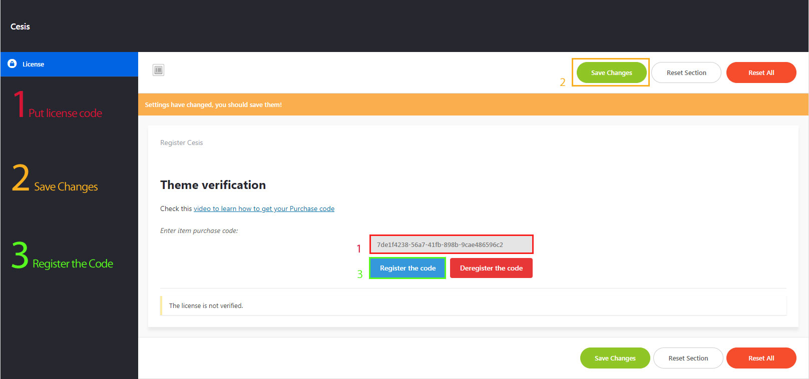
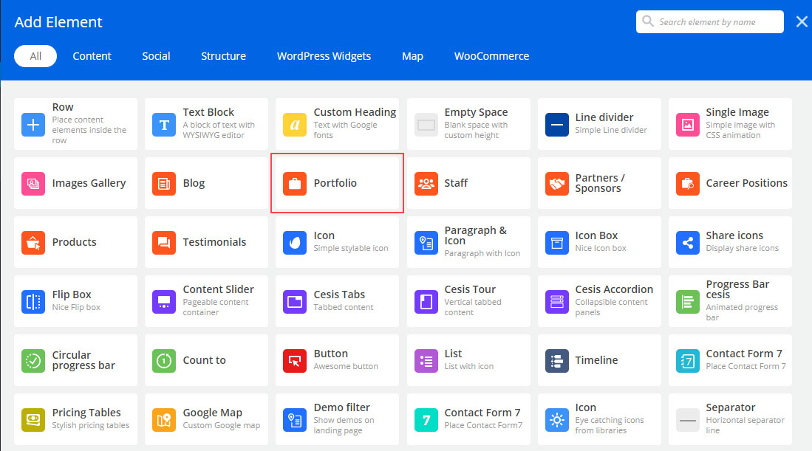
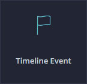
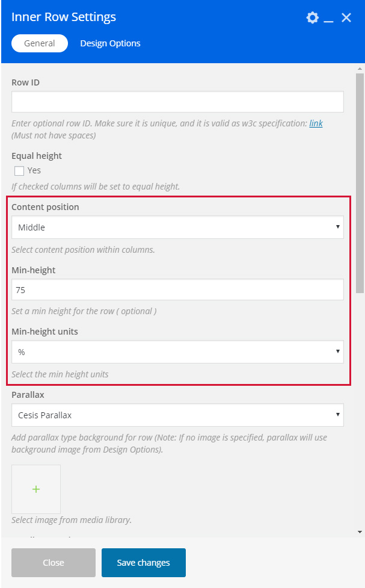
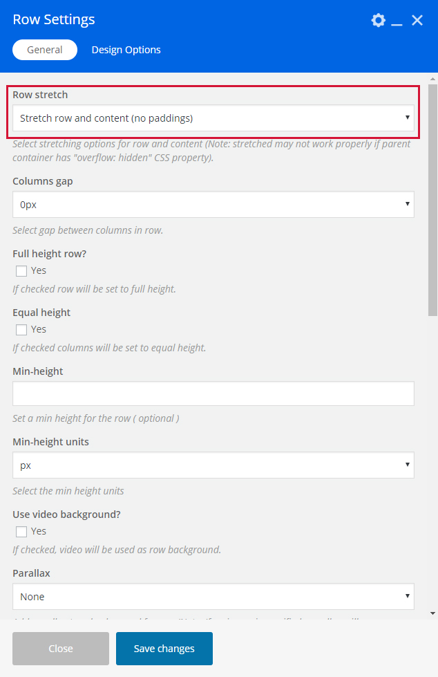

Theme Documentation
Introduction
Thank you for purchasing Cesis WordPress Theme. Before you get started, please be sure to always check out the documentation file. We covered all important topics with all the information you need to use Cesis Theme.
If you are unable to find the information you are looking for in the documentation, please contact us on our support forum or directly from our themeforest account
What is included in the price?
- Cesis WordPress Theme
- Child Theme
- Lifetime Updates
- Theme Documentation
- Premium Plugins
- Premium Plugins documentations
- Premium Support - To our support forum.
If you like our theme please rate Cesis with 5 stars and leave a us a nice review, it means a lot to us.
Simply log in into your Themeforest, go to Downloads section and click 5 stars next to the Cesis WordPress theme.
Thanks!
Tranmautritam Team
Theme Installation via WordPress
When you download the theme from Themeforest, you will get an archive file in .zip extension.
You need to unzip that archive. When done, you should see cesis.zip.
Please, follow the steps below to install Cesis Theme.
Video tutorial
Step 1 - Login to your WordPress Dasrdoard.
Step 2 - Go to Appearance > Themes. Click Add new button, located at the top of the screen or Add new theme ( see screenshots below ).
Step 3 - Click on Upload button at the top of the screen.
Step 4 - Choose cesis.zip.
Step 5 - Wait while the theme is uploaded and installed then activate the theme.
Step 6 - After activating the theme a notice should appear on the top of the screen, click on begin installing plugins ( see screenshots below ).
Step 7 - Select all the plugin,change Bulk Actions drop to Install then click apply ( see screenshots below ).
Step 8 - Congratulation you are ready to use Cesis, check the First Steps part of our documentation to see what you may want to do before starting to edit your WordPress Site.

Common Theme Installation Problems
“Are you sure you want to do this?”
If you get the “Are you sure you want to do this” message when installing cesis.zip file via WordPress, it means you have an upload file size limit. Install the theme via FTP if this happens, or ask your hosting company to increase the limit. You can find the recommend settings Here
Missing stylesheet file
If you get an error saying that the stylesheet is missing, then you have uploaded the wrong folder. Please check that you are uploading the cesis.zip within the Theme Files folder. You have to unzip the file that you download from Themeforest to find this.
Theme Installation via FTP
If you are going to install the theme using FTP, you will need an FTP Client, such as FileZilla.
When you download the theme from Themeforest, you will get an archive file in .zip extension.
You need to unzip that archive. When done, you should see Cesis Folder(folder name can be changed from version to version).
Please, follow the steps below to install the theme via FTP:
Step 1 - Log into your hosting space (server) via FTP client.
Step 2 - In extracted archive folder, find Cesis folder
Step 3 - Upload the Cesis folder to your server in path .../wp-content/themes/.
Step 4 - The uploaded path should be like this: .../wp-content/themes/cesis/
Step 5 - Login to your WordPress Dasrdoard and go to Appearance > Themes and activate the Cesis Theme.
Step 6 - After activating the theme a notice should appear on the top of the screen, click on begin installing plugins ( see screenshots below ).
Step 7 - Select all the plugin,change Bulk Actions drop to Install then click apply ( see screenshots below ).
Step 8 - Congratulation you are ready to use Cesis, check the First Steps part of our documentation to see what you may want to do before starting to edit your WordPress Site.
Additional Links
Setting up the Demo Content
Before importing the dummy data Make sure you have all the plugin installed ( if you want to use woocommerce, make sure to install woocomerce first ).
One Click Importer
We will explain how to import the demo using the Theme One Click Importer
Single page Importer
We will explain how to import the demo using the Single Page Importer
WordPress Importer
We will explain how to import the demo using the WordPress Importer
Error or Problem with Import of the Demo
If you have problem with the Import of the demo please check this section
One Click Importer
Theme panel demo importer will overwrite your settings and import the demo theme panel settings, if you don't need the theme settings check the single page importer
Video tutorial
Step 1 - Log into your WordPress Dasrdoard.
Step 2 - Go to Cesis > Demo Importer.
Step 3 - Then Click on Import Demo of the demo you wish to import. Classic demo will import all the pages you see on our demo site but not the single demo ( agency, business, fashion, lifestyle , photography etc).
Step 4 - The Dummy content can take some time to import depending on your server / host, if it takes more than 5 minutes then you may need to change your server settings.Please check this article to see the recommended settings
Step 5 - Done! You may still need to set a custom Menu, Widgets, Homepage.
Single page Importer
Video tutorial
Step 1 - Log into your WordPress Dasrdoard.
Step 2 - Go to Appearance > Import Demo Data.
Step 3 - Then Click on Import Singles.
Step 4 - After this select the pages or posts you want to import, you can use Shift + click to select multiple pages and click import
Step 5 - Downloading single page will still download the placeholder images, so it may take some time but every import should be over within 3 minutes
Step 6 - Done! But you still need to set the Menu, Widget, Homepage.
WordPress Importer
Step 1 - Log into your WordPress Dasrdoard.
Step 2 - Go to Tools > Import. Then click on WordPress ( bottom of the list ).
Step 3 - A window should appear click the Install now button which is on bottom right.
Step 4 - Click Activate plugin & Run Importer. Then choose the xml file of the demo you want to important and click upload file and import Do not interrupt/cancel the import process!
Step 6 - Done! But you still need to set the Menu, Widget, Homepage.
The importer should be run only once. If something went wrong and you need to import the content again, you may need to reset your WordPress.
Use this plugin to reset the WordPress database : http://wordpress.org/plugins/wordpress-database-reset/
Error or Problem with Import of the Demo
If you have problems importing the demo ( example : infinite loading, error 505 with when using wordpress importer ) then you may have a problem with the server settings. Please check this article : What To Do If Demo Content Import Fails.
How to activate Cesis ( Theme license )
First, thanks for purchasing Cesis! Now to fully use Cesis you will need to activate the theme using the theme license.
Please, follow the steps below to activate the theme:
Step 1 - Log into your WordPress dashboard after installing Cesis Theme.
Step 2 - Click the Cesis Tab
Step 3 - Insert your Purchase code (How To Get Purchase Code ).
Step 4 - Click saves changes
Step 5 - Click Register the code
Step 6 - Congratulation, you can now use Cesis powerful theme options fully.
Removing License - You can only use your license once, if you want to use the theme on two different site you will need to buy a new license or to de-register the license by clicking "Deregister the code" in order to be able to use it on an other domain.
Upload your logo
You can upload your logo image in the Theme Options. If the logo is not uploaded, then your site name will be used.
Please, follow the steps below to upload your logo:
Step 1 - Login to your WordPress Dasrdoard.
Step 2 - Go to Cesis > General Settings.
Step 3 - Upload a Dark Logo ( Used For normal header ) and a Light logo ( Used for Transparent Header ), and the Mobile Logo if you want to use a different logo for the mobile. Size doesn't matter but if you want to make logo retina use two times the size you use in the Theme options.
Step 4 - Set the width size for your logo from "Logo width" ( default 120 ) and the size for the mobile logo "Mobile logo width".
Step 5 - Upload your favicon - should be a 32px x 32px Png/Gif image.
Change Theme Layout / Color
You can set unique color for every part of the theme, the option are separate in seven section.
Follow the steps below to find out how to change the theme color and design:
Step 1 - Login to your WordPress Dasrdoard.
Step 2 - Click on Cesis to get to the Theme option panel.
Step 3 - Choose which part of the theme you want to modify
- Header Settings: To modify Header top bar, Header Main Area, Dropdown and Mobile Menu color
- Main Content Settings: To modify page main content color
- Sidebar Settings: To modify the Sidebar color
- Footer Settings: To modify the Footer main area and Footer Sub Area color
- Search Settings: To modify the Search overlay color
- TITLE: To modify the title and color settings you will need to go under Page Settings > Title settings to modify the page title settings, for the Blog title go to Blog settings > Title settings, each post type has its own title settings
Step 4 - When you have finish to customize the color don't forgot to save
Advice - It may be more easy to customize the color by going to Appearance > Customize so you can see color change live, or if you want use one of our preset color.
Menu Setup
Creating your menu
First we will see how to create your menu
Adding pages to your menu
How to add page to our new menu
Assigning a Menu to a Location
Select where to show our menu
Mega Menu
Learn how to make an awesome mega menu
Menu with Icon
Learn how to use icon for the menu
Creating your menu
Step 1 - Login to the WordPress Dasrdoard.
Step 2 - From the 'Appearance' menu on the left-hand side of the Dasrdoard, select the 'Menus' option to bring up the Menu Editor.

Step 3 - Select Create a new menu at the top of the page.
Step 4 - Enter a name for your new menu in the Menu Name box.
Step 5 - Click the Create Menu button.
Your menu is now defined, and you can now add pages to it (steps below).
Adding pages to your menu
The Screen Options allow you to choose which items you can use to add to a menu. Certain items, like Posts are hidden by default. The Screen Options are located in the top right corner of your WordPress Dasrdoard.
Step 1 - Locate the pane entitled Pages.
Step 2 - Within this pane, select the View All link to bring up a list of all the currently published Pages on your site.

Step 3 - Select the Pages that you want to add by clicking the checkbox next to each Page's title.
Step 4 - Click the Add to Menu button located at the bottom of this pane to add your selection(s) to the menu that you created in the previous step.
Step 5 - Click the Save Menu button once you've added all the menu items you want.
Your custom menu has now been saved.
Assigning a Menu to a Location
Once you've created a menu and filled it with items, it's time to assign it to one of the theme pre-defined locations.
Step 1 - Go to Appearance > Menus and click Manage Locations.
Step 2 - Assign each Theme Location with a menu. You can assign menus to multiple Theme Locations.
Step 3 - Click the Save Changes button.
Mega Menu
Cesis features Mega Menus. The mega menus are available only for top level navigations items only in "Main Menu" area.
Follow the steps below to create a mega menu:
Step 1 - Add a an item to the menu editor. This has to be a top level item!
Step 2 - Click on arrow icon in the top right-hand and exapnd.
Step 3 - Check the "Enable megamenu".
Step 4 - Write in the "Megamenu columns" the number of columns you want to use (from 3 to 5).
Step 5 - Now, you need to add child menu items, which will represent columns in the mega menu.First level of child items will represent Titles in each of 3 columns.
Add 3 sub child menu items, like on the image below.
Step 6 - Now, add child items to each of those columns. This will represent your actual sub-menu pages. Take a look at the image below.
The menu dropdown should now look something like this :
Step 7 - If you want to Remove the Titles (First Column, Second Column Third Column) Go back to the Mega menu setting and check Hide Mega Menu heading.
The menu dropdown should now look something like this :

Step 8 - Adding Widget / Image to the Menu. To do this first you need to have a sidebar set with some widget ( you can create new sidebar go to Appearance > Sidebar ). Menu doesn't work with all the widget, but works will all Cesis Widget and Default WordPress Text Widget
Step 9 - When you have set your sidebar with widget click on the sub child menu you want to turn into widget area ( we will turn the third column into a widget area), make sure it doesn't have sub menu
The menu dropdown should now look something like this :
Menu with Icon
You can easily add Icon for the "Main Menu" Iteam.
Follow the steps below to see how use item in menu:
Step 1 - Add items to your menu editor, when menu is over update / publish menu.
Step 2 - After publishing / updating your menu select the item you want to add item to and click on the arrow icon in the top right-hand and exapnd.
Step 3 - Select the "Filter for the icon", wait for the icon to appear and select the icon.
Step 4 - Select the Icon you want to use, then Update your menu.
Create Blog Posts
Adding Posts
You can customize each posts modifying the post options.
We will explain you how to create post using Cesis.
Gallery Posts
We will explain you how to create Gallery Post.
Video Posts
We will explain you how to create Video Post.
Audio Posts
We will explain you how to create Audio Post.
Link Posts
We will explain you how to create Link Post.
Quote Posts
We will explain you how to create Quote Post.
Post Options
Explain the Post Options
Show your Posts
How to create a Blog page to show your post
Adding Posts
Step 1 - Log in to your WordPress Administration Panel (Dasrdoard)..
Step 2 - Click the 'Posts' tab.
Step 3 - Click the 'Add New' sub-tab.
Step 4 - Start filling in the blanks: enter your post title in the upper field, and enter your post body content in the main post editing box below it.
Step 5 - As needed, select a category, add tags, post format, fill in the meta setings below the editor.
Step 6 - Upload a featured image for your Post.
Step 7 - Scroll down until you see the Post options box, there you will be able to customize the post. Please check Post options page for more information.
Create Gallery Post
Step 1 - Change Post Format to Gallery. 
Step 2 - Scroll down until you see the Post options then click Post General Settings then Gallery Settings, then click the Add/Edit Gallery select images.
Step 3 - Click Add to Gallery then Upload or Select the image you want to use by using Ctrl + Click then click Add to gallery. 
Step 4 - You can now drag and drop the image to change the order, when finished click Update gallery
Video Post
Step 1 - Change Post Format to Video.
Step 2 - Scroll down until you see the Post options then click Post General Settings > Video Settings, then you can choose to use a self hosted video link ( mp4, m4v, webm, ogv, wmw or flv) or you can past your Vimeo or Youtube embed code or other video iframe.
Step 3 - When you are finished, Update your Post
Audio Post
Step 1 - Change Post Format to Audio. 
Step 2 - Scroll down until you see the Post options then click Post General Settings > Audio Settings, there you can put a link to a self hosted audio file or an audio iframe for soundcloud or any other side
Step 3 - Publish or Update your post
Link Post
Step 1 - Change Post Format to Link.
Step 2 - Scroll down until you see the Post options then click Post General Settings, then write your link in the Post custom URL / Link field, don't forgot to use http://.
Step 3 - When you are finished, Update your Post
Quote Post
Step 1 - Change Post Format to Quote.
Step 2 - Scroll down until you see the Post options then click Post General Settings, then write your Quote text and Quote author name.
Step 3 - When you are finished, Update your Post
Post Options
Each post has a copy of the main theme panel option, you will be able to edit small things or if you want to make everything different from the general settings.
The options available are :
Post General settings -
Set a Custom url / link for the post to redirect the user to an other page.
Select the Post unique color ( will be use in some of the blog style ).
Set the Packery thumbnail size, used for the Packery layout
General settings - To set a logo or change the layout to boxed
Header Settings - To edit the top header, header, dropdown, menu settings
Banner settings - To set if you want to use a Content block as banner or Slider revolution
Title settings - To set the title style or hide it
Main content settings - To set the Layout, Sidebar and color settings of the main content
Pre-Footer settings - To set if you want to use a Content block as a pre-footer or footer or Slider revolution
Footer settings - To set the Footer main and sub area settings
Show your Posts
To you show your posts you need to create a Blog page. Click here to check how create a blog page.
Create Portfolio post
Add Portfolio Items
How to add Portfolio item to showcase your work.
Gallery Portfolio Posts
We will explain you how to create Gallery Post.
Video Portfolio Posts
We will explain you how to create Video Post.
Audio Portfolio Posts
We will explain you how to create Video Post.
Portfolio post Options
Explain the Portfolio Post Options
Add Portfolio Items
Step 1 - Log in to your WordPress Administration Panel (Dasrdoard).
Step 2 - Click the 'Portfolio' tab.
Step 3 - Click the 'Add New Portfolio Item' sub-tab.
Step 4 - Start filling in the blanks: enter your portfolio title in the upper field, and enter your portfolio body content in the main post editing box below it.
Step 5 - Add tag(s) to your item, the tags will be used as a filter on Portfolio Template pages.
Step 6 - Scroll down until you see the Portfolio otions box, there you will be able to customize the portfolio post. Please check Portfolio options for more information.
Step 7 - Upload a featured image for your portfolio item then publish it.
Create Gallery Post
Step 1 - Change Post Format to Gallery.
Step 2 - Scroll down until you see the Post options then click Post General Settings then Gallery Settings, then click the Add/Edit Gallery select images.
Step 3 - Click Add to Gallery then Upload or Select the image you want to use by using Ctrl + Click then click Add to gallery.
Step 4 - You can now drag and drop the image to change the order, when finished click Update gallery
Video Post
Step 1 - Change Post Format to Video.
Step 2 - Scroll down until you see the Post options then click Post General Settings > Video Settings, then you can choose to use a self hosted video link ( mp4, m4v, webm, ogv, wmw or flv) or you can past your Vimeo or Youtube embed code or other video iframe.
Step 3 - When you are finished, Update your Post
Audio Post
Step 1 - Change Post Format to Audio.
Step 2 - Scroll down until you see the Post options then click Post General Settings > Audio Settings, there you can put a link to a self hosted audio file or an audio iframe for soundcloud or any other side
Step 3 - Publish or Update your post
Portfolio Post Options
Each post has a copy of the main theme panel option, you will be able to edit small things or if you want to make everything different from the general settings.
The options available are :
Post General settings -
Set a Project description.
Set a Custom url / link for the post to redirect the user to an other page.
Select the Post unique color ( will be use in some of the blog style ).
Set the Packery thumbnail size, used for the Packery layout
General settings - To set a logo or change the layout to boxed
Header Settings - To edit the top header, header, dropdown, menu settings
Banner settings - To set if you want to use a Content block as banner or Slider revolution
Title settings - To set the title style or hide it
Main content settings - To set the Layout, Sidebar and color settings of the main content
Pre-Footer settings - To set if you want to use a Content block as a pre-footer or footer or Slider revolution
Footer settings - To set the Footer main and sub area settings
Showing Portfolio Items
To you show your portfolio items you need to create a Portfolio page. Click here to check how create a portfolio page.
Create Blog page
Create Blog page
Follow the steps bellow to understand how to create a blog page.
Important Blog settings
Explain the most important Blog module settings.
Create blog page
Step 1 - Log in to your WordPress Administration Panel (Dasrdoard)..
Step 2 - Click on Pages > Add New.
Step 3 - Give your page a name then Change the Editor to Backend Editor ( you need to have the WPbakery plugin activated ).
Step 4 - Click on the Add Element button .
Step 5 - Select the Blog module. 
Step 6 - The Blog Settings should appear. You can customize the blog type and color by modifying the settings, for easy editing we recommend Front end editor
Step 7 - You can change the Page layout ( page with left or right sidebar ) from the page options, scroll down until you see the page options change then click on Main Content Settings then Layout Settings, there change "Use custom layout?" to Yes, then you can change the page default layout, width etc ( see screenshot ). After you made the changes don't forget to publish the page
Important Blog settings
Blog Type - You can choose between 4 style: Isotope Grid, Isotope Masonry, Isotope Packery and Carousel.
Blog style - This will change the blog main design, we recommend building your blog from the Front-end editor in order to see the difference and see the changes you make.
Font style - You can choose the font style you want to use, Theme default will use the settings from the theme panel, Demo Pre-set will use the settings of our demo site, Custom will let you choose the font family, size etc from the "Typography tab".
Colors - From the Colors tab you can set custom colors if needed, by default it use the colors set from the theme panel.
Filter - From the Filter tab you can activate and filter the posts using categories or tags.
Pagination / Navigation - From the Pagination / Navigation tab you can set the navigation settings of the module.
Responsive Options - From the Responsive Options you can choose if you want to hide the module on certain devices / window sizes
Create Portfolio page
Create Portfolio page
Follow the steps bellow to understand how to create a staff page.
Create Packery Layout Portfolio
We will explain how to create a Packery Layout Portfolio ( Thumbnail with different sizes ).
Create Full Width / Screen Portfolio
We will explain how to create a Full width Portfolio.
Important Portfolio settings
Explain the most important Portfolio module settings.
Create Portfolio page
Step 1 - Log in to your WordPress Administration Panel (Dasrdoard)..
Step 2 - Click on Pages > Add New.
Step 3 - Give your page a name then Change the Editor to Backend Editor ( you need to have the WPbakery Page builder plugin activated ).
Step 4 - Click on the Add Element button
Step 5 - Select the Portfolio module. 
Step 6 - The Portfolio Settings should appear. You can customize the Portfolio type and color by modifying the settings, for easy editing we recommend Front end editor
Step 7 - You can change the Page layout ( page with left or right sidebar ) from the page options, scroll down until you see the page options change then click on Main Content Settings then Layout Settings, there change "Use custom layout?" to Yes, then you can change the page default layout, width etc ( see screenshot ). After you made the changes don't forget to publish the page
Important Portfolio Settings
Portfolio Type - You can choose between 4 style: Isotope Grid, Isotope Masonry, Isotope Packery and Carousel.
Portfolio style - This will change the portfolio main design, we recommend building your blog from the Front-end editor in order to see the difference and see the changes you make.
Font style - You can choose the font style you want to use, Theme default will use the settings from the theme panel, Demo Pre-set will use the settings of our demo site, Custom will let you choose the font family, size etc from the "Typography tab".
Colors - From the Colors tab you can set custom colors if needed, by default it use the colors set from the theme panel.
Filter - From the Filter tab you can activate and filter the posts using categories or tags.
Pagination / Navigation - From the Pagination / Navigation tab you can set the navigation settings of the module.
Responsive Options - From the Responsive Options you can choose if you want to hide the module on certain devices / window sizes
Create Contact Form
Create Contact Form
Cesis use the contact form 7 plugin, check the steps below to see how to create the contact form.
Create Contact Page
We will explain how to use the form you just created in your page or post.
Contact Form 7 Documentation
Link to the Official Documentation of the Plugin.
Create Contact Form
Step 1 - Log in to your WordPress Dashboard, go to Contact > Add New
Step 2 - Give a Name to your form and change Mail Info
Step 3 - Edit the Form field for more information on how to edit the form check the official documentation
Step 4 - Save your Form
Create contact page
Step 1 - Log in to your WordPress Administration Panel (Dasrdoard)..
Step 2 - Click on Pages > Add New.
Step 3 - Give your page a name then Change the Editor to Backend Editor ( you need to have the WPbakery Page builder plugin activated ).
Step 4 - Click on the Add Element button
Step 5 - Select the Contact Form 7.
Step 6 - The Contact Form 7 Settings should appear. Select the Form you want to use you can also customize the Color and change the fields layout and button design
Step 7 - Update / Publish your page
Create Staff members
Adding Staff Members
How to create your team member post.
Adding Staff Members
Step 1 - Log in to your WordPress Administration Panel (Dasrdoard)..
Step 2 - Click the Staff Members > Add New.
Step 3 - Fill the title field with the staff member name, add a Group and Filter category if needed. The content can be build with the WPbakery page builder but it optional if you want to use the automatically generated content.
Step 4 - Add a featured image, it will represent your staff member's image.
Step 5 - Scroll down until you see the staff member options panel. Set the Staff Member Position and Staff Member Description and other information.
Step 6 - Publish the post.
Showing Staff Members
You need to use the Staff module in order to list your staff members.
Check the staff module page for more information
Create Staff page
Create Staff page
We will explain how to create a staff page.
Staff Members settings
Explain the Staff Members module settings.
Create Staff page
Step 1 - Log in to your WordPress Administration Panel (Dasrdoard)..
Step 2 - Click on Pages > Add New.
Step 3 - Give your page a name then Change the Editor to Backend Editor ( you need to have the WPbakery Page builder plugin activated ).
Step 4 - Click on the Add Element button
Step 5 - Select the Staff Members module.
Step 6 - The Staff Members should appear. You can customize the Staff type and color by modifying the settings, for easy editing we recommend Front end editor
Step 7 - You can change the Page layout ( page with left or right sidebar ) from the page options, scroll down until you see the page options change the Page layout then publish the page
Staff Members Settings
Staff Layout - You can choose between 3 style: Isotope, Isotope Packery and Carousel.
Staff style - This will change the staff main design, we recommend building your staff from the Front-end editor in order to see the difference and see the changes you make.
Font style - You can choose the font style you want to use, Theme default will use the settings from the theme panel, Demo Pre-set will use the settings of our demo site, Custom will let you choose the font family, size etc from the "Typography tab".
Colors - From the Colors tab you can set custom colors if needed, by default it use the colors set from the theme panel.
Filter - From the Filter tab you can activate and filter the posts using categories or tags.
Pagination / Navigation - From the Pagination / Navigation tab you can set the navigation settings of the module.
Responsive Options - From the Responsive Options you can choose if you want to hide the module on certain devices / window sizes
Create Career position
Adding Career Position
How to create your career position post.
Adding Career Position
Step 1 - Log in to your WordPress Administration Panel (Dasrdoard)..
Step 2 - Click the Career Position > Add New.
Step 3 - Fill the title field with the name, add a category if needed. Build The content with the WPbakery page builder
Step 4 - Add a featured image.
Step 5 - Scroll down until you see the Career options panel. Set the Career position description, location, date or time left.
Step 6 - Publish the post.
Showing Career position
You need to use the Career position module in order to list your career position posts.
Check the Career position page for more information
Create Career page
Create Career position page
We will explain how to create a career page.
Staff Members settings
Explain the Career Members module settings.
Create Career page
Step 1 - Log in to your WordPress Administration Panel (Dasrdoard)..
Step 2 - Click on Pages > Add New.
Step 3 - Give your page a name then Change the Editor to Backend Editor ( you need to have the WPbakery Page builder plugin activated ).
Step 4 - Click on the Add Element button
Step 5 - Select the Career position module.
Step 6 - The Career position module should appear. You can customize the Career position type and color by modifying the settings, for easy editing we recommend Front end editor
Step 7 - You can change the Page layout ( page with left or right sidebar ) from the page options, scroll down until you see the page options change the Page layout then publish the page
Career position Settings
Career Layout - You can choose between 2 style: Isotope Grid and Carousel.
Career style - This will change the staff main design, we recommend building your staff from the Front-end editor in order to see the difference and see the changes you make.
Font style - You can choose the font style you want to use, Theme default will use the settings from the theme panel, Demo Pre-set will use the settings of our demo site, Custom will let you choose the font family, size etc from the "Typography tab".
Colors - From the Colors tab you can set custom colors if needed, by default it use the colors set from the theme panel.
Filter - From the Filter tab you can activate and filter the posts using categories or tags.
Pagination / Navigation - From the Pagination / Navigation tab you can set the navigation settings of the module.
Responsive Options - From the Responsive Options you can choose if you want to hide the module on certain devices / window sizes
Create Partners post
Create Partners post
Partners post are great to show the partners / sponsors you have or to show people / company you worked with.
Show Partners on your page ( standard )
We will explain how to show your partners / sponsors on your page.
Show Partners on your page ( carousel )
We will explain how to show your partners / sponsors carousel on your page.
Create Partners post
Step 1 - Log in to your WordPress Administration Panel (Dasrdoard)..
Step 2 - Click on Partners > Add New.
Step 3 - Give your post a name then scroll down until you see the Partners options box.
Step 4 - Add a link using http:// (optional)
Step 5 - Add a Group to be able to filter the Partner ( optional )
Step 6 - Add the company logo as featured image by clicking Set featured image.
Step 7 - Publish the post. 
Show Partners post
Step 1 - Log in to your WordPress Administration Panel (Dasrdoard)..
Step 2 - Click on Pages > Add New.
Step 3 - Give your page a name then Change the Editor to Backend Editor ( you need to have the WPbakery Page builder plugin activated ).
Step 4 - Click on the Add Element button
Step 5 - Select the Partners / Sponsors module
Step 6 - The Partners / Sponsors module should appear, set and save the settings, To see more easily how the module will appear we recommend the use of the front end editor
Page Options
For each page you can change the title style, title background color, select to use a slider and much more! Check the screenshot and read the documentation to see how it works
Page Slider - Select if you want to use a Revolution or Layer Slider
Select Revolution / Layer Slider - Select the slider to show for the page
Slider Position - Select the slider position, under or above the header
Hide Header Top Bar? - Select if you want to hide the Header top bar
Transparent header - Select if you want to make the header transparent
Select page layout - Select if you want the page to have a Right Sidebar / Left Sidebar / No Sidebar.
Show Title - Select to show or hide the title ( good to hide the title when using
Select title height - Choose the height of the header ( example : 400 )
Select title color - Select the title text color.
Select title background color - Select the title background color.
Custom title background - You can upload an image to use as the title background.
Show Breadcrumbs? - Select if you want to show the subtitle and breadcrumbs.
Post Options
For each post you can change the title style, title background color, select to use a slider and much more! Check the screenshot and read the documentation to see how it works
Page Slider - You can use a Revolution or Layer Slider top show on the Post page
Select Revolution / Layer Slider - Select the Slider you want to use for the post
Slider Position - Select if the Slider should be above or under the header
Hide Header top bar - Select if you want to hide the header top bar for this post
Transparent Header - Select if you want to use a Transparent Header for this post
Show title - Select if you want to show or hide the post title section
Title Color - If you want to change the title text color
Title Background Color - If you want to change the title background color
Custom Title Background - If you want to use an image for the title background, you can upload an image or use an image link
Show Slider / Video / Audio on the top of the post - Select if you want to show or hide the featured image / gallery / video / audio / quote on the top of the post
Show Breadcrumbs - Select if you want to hide or show the breadcrumbs
Video Embed Code - Fill this field to make the video appear on top of your post
Quote text - Fill this field to make the quote text appear on top of your post
Quote author name - Fill this field to make the quote author name to appear on top of your post
Select Post Layout - Select the post Layout. Post with Right, Left or No Sidebar
Show Share Buttons - Select if you want to show or hide the share button
Show Author Biography - Select if you want to show or hide the Author Biography
Show Related Post - Select if you want to show or hide the Related post carousel
Portfolio Post Options
For each portfolio post you can change the title style, title background color, select to use a slider and much more! Check the screenshot and read the documentation to see how it works
Page Slider - You can use a Revolution or Layer Slider top show on the Post page
Select Revolution / Layer Slider - Select the Slider you want to use for the post
Slider Position - Select if the Slider should be above or under the header
Hide Header top bar - Select if you want to hide the header top bar for this post
Transparent Header - Select if you want to use a Transparent Header for this post
Show title - Select if you want to show or hide the post title section
Title Color - If you want to change the title text color
Title Background Color - If you want to change the title background color
Custom Title Background - If you want to use an image for the title background, you can upload an image or use an image link
Show Breadcrumbs - Select if you want to hide or show the breadcrumbs
Packery Layout Thumbnail Size - Select The Post Thumbnail size when used in Portfolio Packery Layout
Project Layout - Select the Post Layout, Half Width or Full width
Project Subtitle - Fill this field to add a subtitle to the project
Client name - Fill this field to make the client name appear on the project
Project url - Fill this field to make the project url appear on the project and will also add a button linked to the project
Show Share Buttons - Select if you want to show or hide the share button
Show Author Biography - Select if you want to show or hide the Author Biography
Show Related Post - Select if you want to show or hide the Related post carousel
Video Embed Code - Fill this field to make the video appear on top of your post
Page Builder
Cesis comes with the Premium Plugin WPbakery Page builder, we modified the plugin and added module to give the user the possibility to create all the page and post using only the WPbakery Page builder, no code needed.
We have 75 Modules ( include WooCommerce, Revolution Slider, Layer Slider module ).
To learn how to use the page builder check How to Use Page builder Section
To see all Module Detailed Settings check Page builder Modules
Revolution Slider
Cesis theme includes the premium plugin - Revolution Slider.
Once you've installed and activated the Revolution Slider plugin, you will then see the menu item appear at the bottom of the WordPress menu, as below:

Documentation
You can import the revolution slider we used in our demo, all slider are in the slider folder. To learn more about the Revolution Slider plugin please read the Plugin documentation
Page builder Modules
Row
Create a new Row ( section ) on the page, Full width Row can't be used on page with sidebar
To learn more about Row and Column check the :
How to use page builder
Create full width section
Create parallax / video section
Row Options
Extra class name - If you wish to style particular content element differently, then use this field to add a class name and then refer to it in your css file.
Font Color - Select the font color for the row.
type - Select if you want the row to be in container / full width background / full width content.
Make background parallax? - If you want to make background parallax ( need to have a image set up as background ).
Use video as background? - if you want to use a video as background.
Use Overlay? - if you want to use an overlay for the row background.
Show an Icon on the top of the section? - if you want to show an icon at the top of the section.
Use an arrow on the bottom of the section? - if you want to use a icon at the bottom of the section.
Design Options - To edit the padding and margin and border, check How to use page builder to learn more about design options
Text Block
Create a Text Block ( WordPress editor ) on the page
To learn more about Text Block check the :
How to use page builder
Text Block Options
Extra class name - If you wish to style particular content element differently, then use this field to add a class name and then refer to it in your css file.
Font size - Select the font size (eg : 18 ).
Line height - Select the font line-height.
CSS Animation - Select an animation if needed.
Design Options - To edit the padding and margin and border, check How to use page builder to learn more about design options
Custom Heading
Create a Heading on the page, This is the main module you need to use to create title
To learn more about Custom Heading check the :
How to use page builder
Custom Heading Options
Text - This is the text for your title, you can use strong,span,a tag.
Element tag - select the Element tag, from h2 to h6, h2 and h3 are good to use for main title.
Text align - Select the text alignment.
Font size - Select the font size. For most of the title Cesis use 36px.
Line height - Select the line height, if using big title you may need to use this field, dont forgot the px eg : 40px .
Text Color - Select the heading color.
Font Family - Select the font family, Cesis use LATO.
Font Style - Select the font weight, light, regular,bold etc.
Extra class name - If you wish to style particular content element differently, then use this field to add a class name and then refer to it in your css file.
Design Options - To edit the padding and margin and border, check How to use page builder to learn more about design options
Empty Space
Create an Empty space on the page, great to use if you want to add space between elements.
Empty space Options
Height - Select the height of the empty space eg: 32px .
Extra class name - If you wish to style particular content element differently, then use this field to add a class name and then refer to it in your css file.
Line / Separator
Create a Line / separator on the page, for example check Divider shortcode page.
Line / Separator Options
Line type - Select the Line Design ( normal, double, dotted etc )
Line Color - Select the Line Color.
Use icon? - Select if you want to use an Icon for the Line.
Line Width - Select the line width, leave blank for full width.
Line position - Select the line position, left - center - right.
Top Margin - Add Top margin if needed, eg 20
Bottom Margin - Add Bottom margin if needed, eg 20
Vertical Line / Separator
Create a Vertical Line on the page, for example check Personal Page.
Vertical Line / Separator Options
Line Color - Select the Line Color.
Line Height - Select the height of the Line, eg : 300 .
Top Margin - Add Top margin if needed, eg 20
Bottom Margin - Add Bottom margin if needed, eg 20
Boxed Heading
Create an Boxed Heading on the page
Boxed Heading Options
CSS Animation - Select an animation if needed.
Heading text - Select the text for the heading.
Heading Color - Select the heading color.
Heading Background Color - Select the heading background color.
Heading Border Color - Select the heading border color.
Heading Bottom Border Color - Select the heading bottom border color.
Top Margin - Add Top margin if needed, eg 20
Bottom Margin - Add Bottom margin if needed, eg 20
Single Image
Show an Image on the page.
To learn more about Single image design options check the :
How to use page builder
Single Image Options
Widget title - Enter text which will be used as widget title. Leave blank if no title is needed.
Image - Upload your Image
Image size - Enter image size. Full for full width . Alternatively enter image size in pixels: 200x100 (Width x Height). Leave empty to use "thumbnail" size.
Image alignment - Select image alignment.
Image style - Select display style.
Link to large image? - If selected, image will be linked to the larger image.
Image link - Use this field to make a link for the image
Extra class name - Enter prettyphoto to make the image open in Lightbox
Hover effect - Select the hover effect for the image
CSS Animation - Select an animation if needed.
Design Options - To edit the padding and margin and border, check How to use page builder to learn more about design options
Images Carousel
Create an Images Carousel on the page
Images Carousel Options
Carousel Style - Select the carousel style ( design )
CSS Animation - Select an animation if needed.
Images - Upload your Images
Images size - Enter image size. Full for full width . Alternatively enter image size in pixels: 200x100 (Width x Height). Leave empty to use "thumbnail" size.
On Click - Select what to do when slide is clicked.
Hide prev/next buttons - Select if you want to hide the navigation.
Navigation style - Above or on image when hovered.
Image link - Use this field to make a link for the image
Hide Pagination control? - Select if you want to show or hide the pagination control
Top Margin - Add Top margin if needed, eg 20
Bottom Margin - Add Bottom margin if needed, eg 20
Blog
Display your Blog on the page
Check the following page for the different design:
Classic Layout
Multi Author Layout
Grid Layout
Masonry Layout
Timeline Layout
Blog Options
Post per page - Set the number of post you want to show on the page.
Blog Type - You can choose between 5 style: Standard, Grid, Masonry, Timeline, Multi Author. It will change the blog main design.
Thumbnail size - For Standard, Timeline, Multi Author you can choose between croped Thumbnail or Full size ( original size thumbnail ).
Number of Columns - For Grid and Masonry you can change the blog layout between 4, 3, 2 columns layout.
Category - You can filter the blog using category, select the category you want to show.
Color - Leave blank to use Color you set in theme options, but you can customize each color for the heading, text, highlight, hover, border, background.
Navigation Type - Select the navigation to use. Load More Button or Classic Navigation
Navigation Color - You can also customize the Navigation color if needed.
Recent Blog Posts
Display your Small Blog post on the page, check the Recent Blog Post page to see the design
Recent Blog Posts Options
Post to load - Set the number of post you want to show on the page.
Style - Select the blog style ( design )
Category - You can filter the blog using category, select the category you want to show.
Navigation Type - Select the navigation to use. Load More Button or No Navigation
Blog posts Carousel
Display your Blog post in a carousel on the page, check the Carousel Blog page to see the design
Blog posts Carousel Options
Style - Select the blog style ( design )
Number of Post to load - Set the number of post you want to show on the page.
Number of post per line - Select the Number of post per line ( carousel layout )
Category - You can filter the blog using category, select the category you want to show.
Blog Slider
Display your Blog post in a SliderCheck on the magazine page
Check on the agency page
Blog Slider Options
Style - Select the blog style ( design )
Number of Post to load - Set the number of post you want to show on the page.
Category - You can filter the blog using category, select the category you want to show.
Portfolio
Create a Portfolio on your page
Check the following page for the different design:
Classic Layout
Packery Layout
Masonry Layout
With Title Layout
Full-width Layout
Portfolio Options
Portfolio Design Type - Here you can choose the portfolio type ( design ).
Choose Overlay Type - You can choose between 11 overlay style, we will add more!
Thumbnail Type - Choose what size you want to use for your thumbnail.
Portfolio Layout - You can choose the portfolio layout between 1 to 6 columns.
Category - You can filter the portfolio using category, select the category you want to show.
Tag - You can filter the portfolio using tag, select the tag you want to show.
Number of post to load - This is the number of post to show on the page
Use filter - If you want to use a filter for the portfolio check this box
Navigation Type - Choose if you want: No navigation, Load more button or Classic Navigation for your portfolio.
Portfolio posts carousel
Create a Portfolio Carousel on your page
Portfolio posts carousel Options
Style - Select the portfolio style ( design ).
Posts per line - Choose the number of Posts per line
Number of post to load - Choose the number of post to load.
Category - Filter the Carousel using portfolio Category.
Tag - Filter the Carousel using portfolio Tag.
Staff Members
Show your Staff / Team Member on your page
Check the following page too see the different design: Staff page
Staff Members Options
Number of Staff to Load - Select the Number of Staff to Load.
Group - You can filter the Staff using Group, select the Group you want to show.
Style - Select the Staff Style (design).
Number of Columns - Choose the Staff layout.
Navigation Type - Choose if you want: No navigation, Load more button or Classic Navigation for your Staff.
Use filter - If you want to use a filter for the Staff check this box
Staff Carousel
Show your Staff / Team Member in a carousel on your page
Check the following page too see the different design: Staff carousel page
Staff Carousel Options
Style - Select the Staff Style (design).
Group - You can filter the Staff using Group, select the Group you want to show.
Posts per Line - Choose the number of Staff to show per line ( layout ).
Number of Staff to Load - Select the Number of Staff to Load.
Sponsors / Partners
Show your Sponsor / Partners on your page
Sponsors / Partners Options
Number of sponsor to Load - Select the Number of Sponsor to Load.
Number of column - Select the Number of Column (layout).
Group - Select the Group of sponsor to show.
Sponsors Carousel
Show your Sponsor / Partners in a Carousel on your page
Sponsors / Partners Carousel Options
Number of sponsor to Load - Select the Number of Sponsor to Load.
Number of sponsor per line - Select the Number of Sponsor per line (layout).
Group - Select the Group of sponsor to show.
Contact Form 7
Show your Contact form on your page
For more info about contact for check Contact form Section
Contact Form 7 Options
CSS Animation - Select an animation if needed.
Font Weight - Select the font weight.
Field Position - Select the field position, horizontal or vertical.
Field Space - Choose the size of the space between fields.
Field Border Radius - If you want to make the field rounded ( e.g. 10 (optional) )
Textarea height - Select Textarea height e.g. 200 (optional)
Button type - Choose the form button design
Select contact form - Select the contact form to show.
Colors options - Customize the Color options if needed.
Pricing Table
Show your Pricing Table on your page
For more info about Pricing Table for check Pricing Table Section
To check the design check Pricing Table Page
Pricing Table Options
Pricing Table Style - Select the Pricing table style (design).
CSS Animation - Select an animation if needed.
Top Margin - Add Top margin if needed, eg 20
Bottom Margin - Add Bottom margin if needed, eg 20
Pricing Table - Select the Pricing Table to show.
Colors options - Customize the Color options if needed.
Table
Create a Table on your page
To check the design check Table Page
Table Options
Number of column - Select the Number of column for the table.
Colors options - Customize the Color options if needed.
Column Options
Table Column Title - Enter the title for the column.
Table values - Input Table values here. Divide values with linebreaks (Enter).
Colors options - Customize the Color options if needed.
Google maps
Show a Google Maps on your page
For more info about Google maps check Google Maps Section
Google Maps Options
Map Height - Select the map height, eg 400px
Latitude - Set your Latitude
Longitute - Set your Longitute
Zoom - Set the zoom for the map, Example : 20 ( for a close view ) , 5 ( for a far view )
Lists
Create a Lists on your page
Lists Options
List style - Select the list style
Latitude - Set your Latitude
Longitute - Set your Longitute
Zoom - Set the zoom for the map, Example : 20 ( for a close view ) , 5 ( for a far view )
Lists Item Options
Icon - Select the icon for the list item
Icon Color - Select icon color
List title - Set list item title (optional)
Title color - Set title color
List main text - Set list item main text
Main text color - Set main text color
Link - Set a link for the list item (optional)
Testimonials
Create a Testimonials Carousel on your page
To check the design check Testimonials Page
Testimonials Options
Style - Select the Testimonials style (design).
CSS Animation - Select an animation if needed.
Top Margin - Add Top margin if needed, eg 20
Bottom Margin - Add Bottom margin if needed, eg 20
Colors options - Customize the Color options if needed.
Testimonial item Options
Author image - Select the Image for the testimonial.
Author Name - Put Author Name here.
Author Information - Put author information here ( company, job etc.. )
Quote from author - Main text for the testimonial.
4 Quotes
Create a block of 4 quotes on your page
4 Quotes Options
CSS Animation - Select an animation if needed.
First Quote Author Name - Put First Author Name here.
First Quote Author Information - First Author Information.
First Quote Text - Text for the First Quote.
Second Quote Author Name - Put Second Author Name here.
Second Quote Author Information - Second Author Information.
Second Quote Text - Text for the Second Quote.
Third Quote Author Name - Put Third Author Name here.
Third Quote Author Information - Third Author Information.
Third Quote Text - Text for the Third Quote.
Fourth Quote Author Name - Put Fourth Author Name here.
Fourth Quote Author Information - Fourth Author Information.
Fourth Quote Text - Text for the Fourth Quote.
Colors options - Customize the Color options if needed.
Profile Testimonial
Create a Profile Testimonial Block on your page
Profile Testimonial Options
CSS Animation - Select an animation if needed.
Background Image - Background image for the Block.
Logo Image - Logo for the testimonial.
Author Name - Author Name here.
Quote from author - Text for the Quote.
Colors options - Customize the Color options if needed.
IconBox

Create a Icon box on your page
To check the design check :
Icon boxes 01 Page
Icon boxes 02 Page
IconBox Options
IconBox Type - Select the Iconbox style (design).
CSS Animation - Select an animation if needed.
Top Margin - Add Top margin if needed, eg 20
Bottom Margin - Add Bottom margin if needed, eg 20
Icon - Select the icon for the box
Heading - Heading for the Iconbox
Main Text - Main text for the icon box (optional)
Button text - Enter text to generate a button ( optional )
Button link - Button for the link ( optional )
Change color on hover? - Check if you want the Iconbox to change color when hovered ( optional )
Colors options - Customize the Color options if needed.
Paragraph with icon
Create a Paragraph with Icon on your page
To check the design check :
Icon boxes 01 Page
Icon boxes 02 Page
IconBox Options
IconBox Type - Select the Iconbox style (design).
CSS Animation - Select an animation if needed.
Top Margin - Add Top margin if needed, eg 20
Bottom Margin - Add Bottom margin if needed, eg 20
Icon - Select the icon for the box
Heading - Heading for the Iconbox
Main Text - Main text for the icon box (optional)
Button text - Enter text to generate a button ( optional )
Button link - Link for the button ( optional )
Change color on hover? - Check if you want the Iconbox to change color when hovered ( optional )
Colors options - Customize the Color options if needed.
Button
Create a Button on your page
To check the design check Buttons Page
Button Options
Button Type - Select the Button style (design).
CSS Animation - Select an animation if needed.
Button size - Select the button size.
Icon - Select the icon for the button (optional)
Border Radius - If you want to add radius to your button ( rounded corner ) set number, eg : 10
Button Text - Text for the Button
Font weight - Select the font weight for the button
Button link - Link for the button ( optional )
Button position - Left - Center - Right
Top Margin - Add Top margin if needed, eg 20
Bottom Margin - Add Bottom margin if needed, eg 20
Left Margin - Add Left margin if needed, eg 20
Right Margin - Add Right margin if needed, eg 20
Colors options - Customize the Color options if needed.
Double Button
Create a Two button next to each other on your page
To check the design check Promo box ( bottom of the page )
Double Button Options
Button style - Select the Button style (design).
First button text - Put the first button text.
First button link - Put the first button link.
First button CSS Animation - Select an animation for the first button if needed.
Second button text - Put the second button text.
Second button link - Put the second button link.
Second button CSS Animation - Select an animation for the second button if needed.
Top Margin - Add Top margin if needed, eg 20
Bottom Margin - Add Bottom margin if needed, eg 20
Left Margin - Add Left margin if needed, eg 20
Right Margin - Add Right margin if needed, eg 20
Colors options - Customize the Color options if needed.
Timeline Event
Create a Timeline with Event on your page
To check the design check About us 04 ( bottom of the page )
Timeline Event Options
Top Margin - Add Top margin if needed, eg 20
Bottom Margin - Add Bottom margin if needed, eg 20
Colors options - Customize the Color options if needed.
Event Options
Image - Select the Button style (design).
Event Title - Put the first button text.
Event Main Text - Put the first button link.
CSS Animation - Select an animation for the module if needed.
Date Options
Date - Enter the Date 2014, FEB etc..
Tabs
Create Tabs on your page
To check the design check Tabs Page
Tabs Options
Auto rotate tabs - Select if you want the tabs to rotate automatically.
Tabs style - Select the Tabs style ( design ).
Tabs color - Select the Tabs color
Top Margin - Add Top margin if needed, eg 20
Bottom Margin - Add Bottom margin if needed, eg 20
Tour
Create Vertical Tabs / Tour on your page
To check the design check Tabs Page
Tabs Options
Auto rotate tabs - Select if you want the tabs to rotate automatically.
Tabs style - Select the Tabs style ( design ).
Tabs positions - Select the Tabs position, left or right
Top Margin - Add Top margin if needed, eg 20
Bottom Margin - Add Bottom margin if needed, eg 20
Accordion

Create Accordion on your page
To check the design check Accordion Page
Accordion Options
Active section - Enter section number to be active on load or enter false to collapse all sections.
Allow collapsible all - Select checkbox to allow all sections to be collapsible.
Disable keyboard interactions -Disables keyboard arrows interactions LEFT/UP/RIGHT/DOWN/SPACES keys.
Tabs style - Select the tabs style ( design ).
Top Margin - Add Top margin if needed, eg 20
Bottom Margin - Add Bottom margin if needed, eg 20
Section Options
Section Title - Enter the title for the section.
Colors options - Customize the Color options if needed.
Promo box
Create a Promotion Box on your page
To check the design check Promo Box Page
Promo box Options
Style - Select the Promo box style ( design ).
CSS Animation - Select an animation for the module if needed.
Box Title - Enter The Title for the Box.
Box Main Text - Main text for the box.
Button Text - Text for the box button
Button link - Link for the box button
Icon - Select Icon for the box
Icon size - Select the icon size, eg 20
Top Margin - Add Top margin if needed, eg 20
Bottom Margin - Add Bottom margin if needed, eg 20
Alert Message
Create an Alert Message / Box on your page
To check the design check Alert Message Page
Alert Message Options
Alert Style - Select the Alert style ( design ).
Alert Type - Select the Alert type.
CSS Animation - Select an animation for the module if needed.
Alert Title - Enter The Title for the Alert.
Alert Text - Main text for the Alert.
Top Margin - Add Top margin if needed, eg 20
Bottom Margin - Add Bottom margin if needed, eg 20
Progress Bar
Create an Progress Bar on your page
To check the design check Progress Bars Page
Progress Bar Options
Style - Select the Progress Bar style ( design ).
Bar Options
Progress bar title - Select the Progress Bar title ( design ).
Percentage - Enter the percentage eg: 70
Add Stripe? - Select if you want to add stripe to the bar
Animate the stripe? - Select if you want to make the stripe move
Top Margin - Add Top margin if needed, eg 20
Bottom Margin - Add Bottom margin if needed, eg 20
Colors options - Customize the Color options if needed.
Pie Chart
Create an Pie chart on your page
To check the design check Progress Bars Page
Pie Chart Options
Style - Select the Pie Chart style ( design ).
CSS Animation - Select an animation for the module if needed.
Percentage - Enter the percentage eg: 70
Pie Chart Heading - Enter The Heading for the pie chart.
Pie Chart Text - Enter text for the Pie Chart.
Colors options - Customize the Color options if needed.
Count to

Create an Number Count To on your page
Count To Options
Count to type - Select the Count to type ( design ).
CSS Animation - Select an animation for the module if needed.
Number - Enter the number to count to
Number of decimal - Set the number of decimal of your number eg ( if number is 2.300 the number of decimal is 3 )
Speed - The Speed of the count to animation
Heading - Heading for the count to
Colors options - Customize the Color options if needed.
Social Icons
Display your Social Icons on your page
Social Icons Options
Social Icons Style - Select the Social Icons style ( design ).
CSS Animation - Select an animation for the module if needed.
Top Margin - Add Top margin if needed, eg 20
Bottom Margin - Add Bottom margin if needed, eg 20
Social Link - Put a link for the social icon you want to show
Colors options - Customize the Color options if needed.
Share Icons
Display Share Icons on your page
Share Icons Options
CSS Animation - Select an animation for the module if needed.
Icons Position - Select the Icons position left - center - right.
URL - Enter the url you want to share
Message to share - Enter the Message to Share
Icon hover message - Enter the Icon hover message
Social Icons - Select the social icons to use to share
Colors options - Customize the Color options if needed.
Twitter Carousel
Display a Twitter Carousel on your page
Twitter Carousel Options
Carousel Style - Select the Style for twitter carousel ( design )
CSS Animation - Select an animation for the module if needed.
Twitter id - Enter the twitter id for the carousel
Number of Tweet to load - Enter the number of tweet to load
Colors options - Customize the Color options if needed.
Search Field
Display a Search Field on your page
Search Field Options
CSS Animation - Select an animation for the module if needed.
Place Holder - Enter the Place holder for the search field
Border Radius - If you want to make the border rounded enter a number eg: 5
Top Margin - Add Top margin if needed, eg 20
Bottom Margin - Add Bottom margin if needed, eg 20
Colors options - Customize the Color options if needed.
Code Box
Display a Code Box on your page
Code Box Options
CSS Animation - Select an animation for the module if needed.
Text - Text for the code box.
Top Margin - Add Top margin if needed, eg 20
Bottom Margin - Add Bottom margin if needed, eg 20
Woocommerce product
Display a WooCommerce Product Carousel on your page
Woocomerce Product Options
Posts per line - Select the number of posts per line.
Number of Products to load - Select the number of product to load for the woocommerce.
Product type - Select the Product Type ( recent product / featured product )
4k Icon
Display an single Icon on your page
Icon Options
Icon - Choose the icon you want to use
Icon size - Select the icon size
Background shape - Select the background shape for the icon (optional)
Link to go to When Icon is Clicked - Enter a URL here to make your icon a link.
Icon Float - Select the icon postion Center ( don't float ) - left - right
Icon Margin - Select the icon margin
Class name - You can add an extra class name to this icon if you want to add custom CSS styles to it.
Use Page Builder
Activate Page builder
We will explain how to active the WPbakery Page builder.
Add and modify Row Layout
We will explain how to add Row and change Row layout works.
Edit Element
We will explain how to edit element.
Duplicate Element
We will explain how to duplicate element.
Remove Element
We will explain how to remove element.
About Row / Column / Custom heading / Text Block Design options
We will explain how to edit design options to make your page looks beautiful.
Official Plugin Documentation
For More information about the WPbakery Page builder check the official documentation.
Activate Page builder
Step 1 - Log in to your WordPress Administration Panel and make sure you have the WPbakery page builder activated.
Step 2 - Go to WPbakery Page builder > Role Manager. then change Post type to custom and check all the boxes to activate the Page builder on all those posts.
Step 3 - Click on Pages > Add New.
Step 4 - Click on Backend Editor or Front end editor.
Add and modify Row Layout
Step 1 - Go to your page / post, first activate the backend editor and click Add Element
Step 2 - Select the Row Module
Step 3 - Click on the Edit This Row (pencil icon) to Edit the Row element ( in our example we use row with 3 columns filled with text block )
Step 4 - To change the Row layout ( number of columns ) you need to click the second Icon from the left then select a layout or custom to make your own
Edit Element
Pencil Icon - To Edit Row, Column or Module you need to click the Pencil icon.
Duplicate Element
Pages Icon - To Duplicate Row or Module you need to click the Pages icon.
Remove Element
Trash Box Icon - To Remove Row, Column or Module you need to click the Trash Box icon.
About Row / Column / Custom heading / Text Block Design options
Design Options - When you edit row / column / custom heading / text block module, you can edit the design options . It is Good to add bottom Padding to your Column, so they will looks good on mobile
Page Title
Set the Global Settings for the Page Title
Title style is set for each type of post ( Page, post, project, product, etc...), under "Post type" Setting > Title Settings
Set the Individual Page Title Settings
This is the title settings that will apply for each page, we can say that this will be the default title style.
Create different title style using Content Block
How to create your own title style.
Set the Global Settings for the Page Title
Step 1 - Log in to your WordPress Administration Panel, Click on Cesis > "Post type" Settings >Title Styling ( "Post type" being Page, Blog posts, Portfolio posts, etc ).
Step 2 - Select the Title Layout
Step 3 - Set the Title container width.
Step 4 - Set the Title container height., for the layout 2 and 3 we are recommending 200px height minimum
Step 5 - Set the Title font and color.
Step 6 - Set the Breadcrumbs settings.
Set the Individual Page Title Settings
Step 1 - Go editing the page / post you want to customize the title style.
Step 2 - Scroll down until you see the page options panel.
Show Title - Select to show or hide the title ( good to hide the title when using revolution slider )
Title Height - You can change the title height if needed, great when you are using a image background
Select title color - Select the title text color ( will also effect the breadcrumbs color ).
Select title background color - Select the title background color.
Custom title background - You can upload an image to use as the title background.
Show Subtitle and Breadcrumbs? - Select if you want to show the subtitle and breadcrumbs.
Create different title style using Content Block
Step 1 - Log in to your WordPress Administration Panel, Click on Content blocks > Add new
Step 2 - Set a title for the content block then use the backend or frontend editor. ( if you can't see the backend/frontend button please check how to setup WPbakery page builder STEP 2)
Step 3 - Add a row and change Row stretch settings to one of the three option depending the style you want to use.
Step 4 - Change the row Min-height settings to size you like, for big title 70% or use Full-height row are nice
Step 5 - Change the row Content position settings to middle ( this option is near the bottom of the general tab of the row settings ).
Step 6 - Add background color / parallax or video to the row if needed.
Step 7 - You can upload an image to use as the title background.
Step 8 - Fill the row with the content you want to use for you special title, to set text that show the title automatically use the Custom Heading module and change the text source to Post or Page title.
Step 9 - Publish / Update your content block.
Step 10 - Go set your Content block from the theme panel or from the single page / posts options.
Set Transparent Header
Follow the next step to learn how to create a page with a Transparent Header.
Page Transparent Header
Step 1 - Go create or edit a page : Page > Add new.
Step 2 - Scroll down until you see the page options panel.
Step 3 - Click Header settings change Use Custom Settings? to yes then change "Transparent Header" to Yes
Step 4 - Update, publish your page.
Create and use Content block
Content blocks are content you can create with the WPbakery page builder and then set them as banner / slider before or after the site header, or to set them as a pre-footer content.
Follow the next step to learn how to create content block for a banner / slider or custom footer. Make sure you have the Page builder enable for the content block how to setup WPbakery page builder - STEP 2
Import one of our content block example rather then start from nothing to easily create your banner / slider or footer
Go to Appearance > Import Demo Data, then click Import Single, select one of the content block ( banner / slider or footer ) to import
Content block ( Banner )
We explain how to make a content block to use for banner
Content block ( Slider )
We explain how to make a content block to use for slider
Content block ( Footer )
We explain how to make a content block to use for footer
How to make your content block ( banner )
Step 1 - Log in to your WordPress Administration Panel, Click on Content blocks > Add new
Step 2 - Set a title for the content block then use the backend or frontend editor. ( if you can't see the backend/frontend button please check how to setup WPbakery page builder STEP 2)
Step 3 - Add a row and change Row stretch settings to one of the three option depending the style you want to use.
Step 4 - Change the row Min-height settings to size you like, for big banner 70% or use Full-height row are nice
Step 5 - Change the row Content position settings to middle ( this option is near the bottom of the general tab of the row settings ).
Step 6 - Add background color / parallax or video to the row if needed.
Step 7 - You can upload an image to use as the banner background.
Step 8 - Fill the row with the content you want to use for your banner.
Step 9 - Publish / Update your content block.
Step 10 - Go set your Content block from the theme panel or from the single page / posts options.
How to make your content block ( Slider )
Step 1 - Log in to your WordPress Administration Panel, Click on Content blocks > Add new
Step 2 - Set a title for the content block then use the backend or frontend editor. ( if you can't see the backend/frontend button please check how to setup WPbakery page builder STEP 2)
Step 3 - Add a row and change Row stretch settings to Stretch row and content (no paddings).
Step 4 - Then add the Content Slider module.
Step 5 - Add a Row to the section then change the Inner row Min-height settings to size you like, for big slider 70% or use Full-height row are nice
Step 6 - Change the row Content position settings to middle
Step 7 - Add background color / parallax or video to the row if needed.
Step 8 - Then fill the row with content you want to use in the slide.
Step 9 - Duplicate your slide, and edit the content to make the second slide You need at least 2 slide / section to have the Content slider to work.
Step 10 - Publish / Update your content block.
Step 11 - Go set your Content block from the theme panel or from the single page / posts options.
How to make your content block ( Footer )
Step 1 - Log in to your WordPress Administration Panel, Click on Content blocks > Add new
Step 2 - Set a title for the content block then use the backend or frontend editor. ( if you can't see the backend/frontend button please check how to setup WPbakery page builder STEP 2)
Step 3 - Add a row and change Row stretch settings to one of the three option depending the style you want to use.
Step 4 - Then add a row and select the row layout depending on the footer style you want to use .
Step 5 - Add background color / parallax or video to the row if needed.
Step 6 - Then fill the row with content you want to use in your footer.
Step 7 - Publish / Update your content block.
Step 8 - Go set your Content block from the theme panel or from the single page / posts options search for "Pre-footer settings" then select Content block.
Step 9 - Select the Content block to use.
Create page with Banner / Slider
Follow the next step to learn how to create a page with a Banner / Slider. You need to create a content block first or Slider revolution
Page with Banner / Slider
Step 1 - Go create or edit a page : Page > Add new.
Step 2 - Scroll down until you see the page options panel.
Step 3 ( optional ) - Click Title settings and set "Use custom settings" to yes, then set Show title area" to No ( optional )
Step 4 - Click on "Banner settings" then select Content block or Slider Revolution.
Step 5 - Then Select the Banner Position, you can choose Under the header or Above the header.
Step 6 - Select the Content block or Slider revolution to use.
Step 7 - Update, publish your page.
Create Full width Section
Full width Section ( background only )
We will explain how to create a full width background section
Full width Section ( content )
We will explain how to create a full width content section.
Full width Section ( background only )
Step 1 - Go to your page / post, first activate the backend editor and click Add Element
Step 2 - Select the Row Module
Step 3 - Click on the Edit This Row (pencil icon) ( in our example we use row with 3 columns filled with text block )
Step 4 - Change the Row stretch setting to Stretch Row
Step 5 - Click Design options and change the Background color or Background image if needed, then click Saves changes.
If you are using only one column in the row, add padding to the row.
If you are using multiples column in the row then add padding to the columns not the row
Step 6 - Your page should now have a background that reach the edge of your page
Full width Section ( content )
Step 1 - Go to your page / post, first activate the backend editor and click Add Element
Step 2 - Select the Row Module
Notice - in our example we use row with 3 columns filled with text block to show you how the Stretch row and content (no paddings) works. Before any modification the page looks like this
Step 3 - Click on the Edit This Row (pencil icon)
Step 4 - Change the Row stretch setting to Stretch Row and content (no paddings) then click Save changes 
Notice - The Page has now Full widht content but our Columns looks bad we need to Edit and Add some space to the columns
Step 5 - Click on Edit This Column (pencil icon)
Step 6 - The Column Settings should appear, click on Design Options then add Padding to your column ( using vh or % is better for Responsive ) then click Save Changes and do the same for the other columns
Notice - Now the Column looks better
Step 7 - Now let's try to change the column background color and text module color, click on Edit This Column then click Design Options and change Background Color then click Saves Changes, then go edit the Text block module and change the text color Do the same for the other columns to have this result
Create Parallax / Video Section
Parallax Section
We will explain how to create a Parallax Section
Video Section
We will explain how to create a Video section.
How to Upload and Get Video URL / Link
We will explain how to upload Video and get the Video URL / Link.
Parallax Section
Step 1 - Go to your page / post, first activate the backend editor and click Add Element
Step 2 - Select the Row Module
Step 3 - Click on the Edit This Row (pencil icon)
Step 4 - Change the Row stretch setting to one of the Stretch Row option then change Parallax to Cesis Parallax, set the image you want to use and adjust the speed.
Step 5 - Update or Publish your page and you should now have a section with parallax background
Video Section
Step 1 - Go to your page / post, first activate the backend editor and click Add Element
Step 2 - Select the Row Module
Step 3 - Click on the Edit This Row (pencil icon)
Step 4 - Change the Row stretch setting to one of the Stretch Row option then check Use video as background?, then use a youtube / vimeo or paste your Video Link, IMPORTANT, use only 1 of the 3 options
Notice - If you don't know how to upload video and get the video link please check the How to Upload and Get Video URL / Link
Step 5 - You can edit the Design options ( remove margin and add padding "optional" ) and then Saves Changes and Update / Publish your page. You should now have a Full width Section with Video
How to Upload and Get Video URL / Link
Step 1 - Log in your WordPress Admin Panel then Click on Media > Add New
Step 2 - Drop or Select the video file you want to upload 
Step 3 - Click the Edit button, a new tab with your video information should open
Step 4 - On the Top Right of the Page you should be able to see the File Url, that what you need to copy and paste in the Video link field
Notice - I will now explain how to get video URL of video that are already uploaded
Step 1 - Log in your WordPress Admin Panel then Click on Media
Step 2 - Change the Dropdown that is on the Top Left of the page from All to Video then click on Filter
Step 3 - Click on the Video you want to get the URL
Step 4 - On the Top Right of the Page you should be able to see the File Url, that what you need to copy and paste in the Video link field
How to Create One Page
Set the One page sections ID
First we will explain how to create the page
Set the menu for the One page
We will explain how to set the menu needed for your one page.
Turn one page to Swipe section mode
We will explain how to set turn the One page to the swipe section mode ( can be seen here )
Set the One page sections ID
Step 1 - Go create or edit a page : Page > Add new.
Step 2 - Select the Section Module
Step 3 - Click on the Edit This Section (pencil icon)
Step 4 - Set an ID for the section, You need to use the Same ID when you create the Menu
Step 5 - Repeat the step 3 and 4 for all the section you want to link for the Menu
Step 6 - Then scroll down to Page options > Main content settings > Layout settings and change Active One page to Yes, you can also add navigation if needed.
Step 7 - If you are not using the one page menu as the main menu, go to Page options > Header settings > Header Main Area and set the Custom menu.
Step 8 - Update or Publish your page. If you need to know how to create the menu check the next section
Set the menu for the One page
Step 1 - Login to the WordPress Dasrdoard.
Step 2 - From the 'Appearance' menu on the left-hand side of the Dasrdoard, select the 'Menus' option to bring up the Menu Editor.
Step 3 - Select Create a new menu at the top of the page.
Step 4 - Enter a name for your new menu in the Menu Name box.
Step 5 - Click the Create Menu button.
Step 6 - Click on Custom Links and add the div ID you used in you page ROW ( example if you set row id to : the_portfolio you need to set the custom link to #the_portfolio ).
Step 7 - Repeat and add custom link for each section you want to link, then set the menu as your main menu or go set it to the Page you want to use as One Page.
Set One page as Swipe section
Step 1 - Go edit the page you are using as One page, if you don't have a "one page" created yet check this part first.
Step 2 - To make the one page to a swipe section, there is few thing that need to be done. Each Section must only contains 1 row set as full height row.
Step 3 - After you have done this for each row, go to Then scroll down to Page options > Main content settings > Layout settings and change Active One page and Active section swap to Yes, you can also add navigation if needed.
Set your Homepage
Step 1 - Go to Settings > Reading in your WordPress Dasrdoard panel.
Step 2 - Set "Front page displays" to a "Static Page".
Step 3 - In the drop down menu for "Front Page" choose a page which will be your home page.
Step 4 - Leave the drop down menu for "Posts page" empty, as this is not used by the theme.
Step 5 - Save changes.
WooCommerce
Cesis themes is 100% compatible with the WooCommerce plugin for WordPress. It includes full design integration of the WooCommerce pages, shortcodes and widgets.
If you want to use Woocommerce you will have to install the plugin, to do so go to Plugins > Add New , search for Woocommerce.
The Plugin you need to install is WooCommerce - excelling eCommerce by WooThemes
For full documentation visit the following websites:
- WooCommerce Plugin Page
- WooCommerce Documentation
- WooCommerce Community Forums
- WooCommerce Builtin Shortcodes
Change Shop Page Options
We will explain how to change the Shop page ( Woocommerce product archives )
Change Single product Options
We will explain how to change the Single product page options
Change Shop Page Options
Step 1 - Log in to your WordPress Administration Panel, Click on Cesis > Archives settings then Product.
Step 2 - There you can select Page Layout, what elements you want to show or hide
Change Shop Page Options
Step 1 - Log in to your WordPress Administration Panel, Click on Cesis > Woocommerce Product Settings.
Step 2 - There you can select Page Layout, what elements you want to show or hide
Create Google Maps
Full width Google Map
We will explain how to create a full width Google map section
Embed Google Map Block
We will explain how to create a embed google maps block
Full width Google Map
Step 1 - Go to your page / post, first activate the backend editor and click Add Element
Step 2 - Select the Google Maps
Step 3 - The Google Maps settings should open, you will need to set the google maps api, and Latitude and Longitude, other options are optional
Step 4 - You need to set the google api, to do so visit Google Maps Api developers site
Step 5 - To get the Latitude and Longitude go to Google Maps site, make a right click on the place you want to show for your map and click What's here Then on the top left you should have the name of the place and can copy the Latitude and LongitudeIn this example Latitude is : 40.690819 and Longitude is : -73.991697.
Step 5 - Update the Latitude and Longitude and click Save changes.
Step 6 ( optional ) - Set marker on the map, to do so click the Marker tab then edit the marker Longitude and Latitude, the other option are optional.
Step 7 ( optional ) - To change the appearance of the map, click the Appearance tab then change the Map style dropdown to "Custom", then go check the map Snazzy Maps repository to get the custom code to use in the Javascript style array
Step 8 ( optional ) - Edit the Row that contains your Google Maps module and make it full width content ( optional ).
Change Font / Typography
Change Main, Alternative, Headings and Quote / Typography
We will explain how to change the Website main font.
Change Header Menu Font / Typography
We will explain how to change the Website Header / Menu font.
Change Dropdown Menu Font / Typography
We will explain how to change the Dropdown Menu font.
Change Website Main, Alternative, Headings and Quote / Typography
Step 1 - Log in your WordPress Admin click Cesis > Typography.
Step 2 - From here you can change the theme main font and spacing for the heading
Step 3 - Saves Changes
Change Header Menu Font / Typography
Step 1 - Log in your WordPress Admin click Cesis > Header settings > Header main area.
Step 2 - From here you can change the Header / Menu main font
Step 3 - Saves Changes
Change Dropdown Menu / Typography
Step 1 - Log in your WordPress Admin click Cesis > Header settings > Dropdown.
Step 2 - From here you can change the Dropdown Menu font
Step 3 - Saves Changes
Child Theme
Cesis comes with a Child Theme.
Simply install Cesis_Child.zip like a regular WordPress theme.
What is a Child Theme?
A child theme is a theme that inherits the functionality of another theme, called the parent theme. Child themes allow you to modify, or add to the functionality of that parent theme. A child theme is the best, safest, and easiest way to modify an existing theme, whether you want to make a few tiny changes or extensive changes. Instead of modifying the theme files directly, you can create a child theme and override within.
Why use a Child Theme?
If you modify an existing theme and it is updated, your changes will be lost. With a child theme, you can update the parent theme (which might be important for security or functionality) and still keep your changes. It’s a great way to get started if you are just learning WordPress theme development.
Additional Links
Disable Comments
Comments are enabled on WordPress by default. You can change this default for new posts or pages you’ll publish in the future, as well as change it for posts or pages you already published.
To change the defaults for new posts or pages, go to Settings → Discussion.
To disable comments on an existing post/page/project, open it up for editing. Now beneath the main content area, you should see a box labeled “Discussion”. Simply uncheck both boxes and save your changes.

What if you can’t see the discussion box?
Then you need to click the “Screen Options” tab in the upper right corner of your screen and check the box to enable the discussion module. You still need to close the tab and navigate to the bottom of the page and uncheck “Allow Comments” in the discussion module.

Theme Update via WordPress
Updating the theme via WordPress is very similar to the install process via WordPress.
Follow the steps below to update your theme via WordPress:
Step 1 - Log into your WordPress Dasrdoard.
Step 2 - Go to Appearance > Themes.
Step 3 - Deactivate the Cesis Theme by simply activating a different theme. Once you activate a different theme, you can delete the Cesis theme.
Step 4 - Delete the Cesis Theme. Do not worry, your content will not be lost!
Step 5 - Then simply upload the new “cesis.zip” file in the Appearance > Themes section. Click on the Install Themes tab at the top and choose to upload the zip file. You have this step explained in section: Theme Installation via WordPress.
Theme Update via FTP
Updating the theme via FTP is very similar to the install process via FTP.
Follow the steps below to update your theme via FTP:
Step 1 - Go to .../wp-content > themes location on your server using a FTP client and backup your "cesis" theme folder by saving it to your computer, or you can choose to simply delete it. Your content will not be lost.
Step 2 - Download the new version of Cesis theme from your Themeforest and retrieve Cesis folder by unpacking the zip that you download from Themeforest and cesis.zip ( if you want to be sure this is the right folder, check if it contains the style.css file ).
Step 3 - Then simply drag and drop the new "cesis" theme folder into .../wp-content > themes location. Choose to “Replace” the current one if you did not delete it.
Step 4 - Log into your WordPress Dasrdoard, go to Appearance > Themes and activate the new Cesis theme.
Speed Optimization
If you think your website takes too much time to load maybe you should.
- Install a Cache Plugin for WordPress. We recommend W3 Total Cache.
- Install an Image Compress Plugin. We recommend WP Smush It.
- Install a Database Optimizer Plugin We recommend WP Optimize
- Reduce the number of posts on the page
- Reduce the number of unnecessary plugins.
- Use more icons and less images.
Changelog
Version 1.1.6 (2018.7.27)
- Coffee Demo added. - "The Grid" Premium plugin added. - Icon box module improved. - Paragraph with icon module improved. - Default WPbakery PB Tabs, Accordion, tours fixed. - Small fixes
Version 1.1.5 (2018.7.13)
- Staff single post error fixed. - Small fixes.
Version 1.1.4 (2018.7.10)
- Modern Business Demo added. - WPBakery Page builder updated. - Breadcrumb module added. - Post information module added. - Header Top bar text size option added. - Footer Sub bar text size option added. - Project, Staff, Career information field change to Editor. - PHP7 and pricetable error fixed. - Small fixes.
Version 1.1.3 (2018.6.25)
- Cesis plugin updated. - Custom post slug option added. - Mobile logo adjusted.
Version 1.1.2 (2018.6.24)
- Mobile logo size option adjustement. - SVG logo adjustement. - IE / Edge adjustements.
Version 1.1.1 (2018.6.23)
- WPbakery Page builder updated. - Slider Revolution updated. - Category, Tag product page layout fix. - Centered logo adjustement.
Version 1.1.0 (2018.6.21)
- WPbakery Page builder updated. - Shortcode now accepted in Footer sub bar. - "Price" Option added to Product Module filter. - Category, Tag product page modified to act like the archive page.
Version 1.0.9 (2018.6.15)
- New option to hide sidebar on mobile. - New option to add banner and pre-footer to 404 page. - New option for nofollow attribute for button shortcode. - Google fonts updated. - Small fixes.
Version 1.0.8 (2018.6.13)
- New option to use custom link for logo. - New option to use content block in vertical / offcanvas header. - Mobile menu adjustement. - Full width row and modules adjustement.
Version 1.0.7 (2018.6.11)
- Flat demo added. - New function for "One page" mobile menu. - WPbakery Grid module adjustement. - License registration adjustements.
Version 1.0.6 (2018.6.07)
- Archives content block bug fixed. - Child theme adjustement ( regarding license registration ).
Version 1.0.5 (2018.6.06)
- Woocommerce 3.4.2 Compatible. - Theme panel visual modified. - Small fixes.
Version 1.0.4 (2018.6.05)
- Mobile menu centered option added. - GDPR compatible. - Small fixes.
Version 1.0.3 (2018.6.02)
- Creative Agency demo added. - Layerslider plugin added. - Custom css option added. - New blog & testimonials style
Version 1.0.2 (2018.5.27)
- WooCommerce 3.4 Compatible.
Version 1.0.1 (2018.5.23)
- Google fonts updated. - Documentation updated.
Version 1.0.0 (2018.5.22)
- First Release!